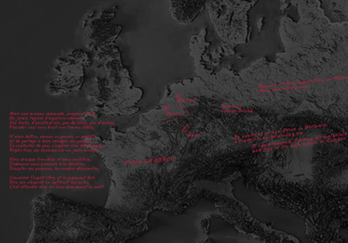

Gray
areas
Christophe Plantin, a 16th-century Antwerp printer, revolutionized publishing with bold innovations, spreading knowledge and challenging norms, leaving a lasting legacy.
Read his story ->Christophe Plantin, a 16th-century Antwerp printer, revolutionized publishing with bold innovations, spreading knowledge and challenging norms, leaving a lasting legacy.
Read his story ->
The dim glow of candlelight flickered across the walls of a dimly lit room, casting long shadows that danced with the rhythm of the clacking wooden shoes outside. A hooded figure slipped quietly through the door, their footsteps muffled by the thick cobblestones that lined the narrow street.

Inside, Christophe Plantin, sat among a circle of trusted associates. Their whispers filled the air, a symphony of secrecy and ambition, as they plotted a course that could alter history, or condemn them to a fate far worse than death.

It was the 16th century, an era of religious fervor and political treachery. In the bustling heart of Antwerp, Christophe Plantin had carved out a name for himself as one of the most prominent printers of his time.
His reputation was a double-edged sword, a beacon of success that also made him a target for those who sought to quell the spread of forbidden ideas. The demand for Protestant literature was insatiable, yet the risk of printing such materials was perilous. The Inquisition's watchful eye was ever-present, ready to crush any whisper of dissent with the brutal efficiency of accusations of heresy.
Plantin's solution was as ingenious as it was dangerous. In the shadows of remote towns like Kampen, Vianen, and Wesel, he established secret printing presses, hidden sanctuaries where forbidden books could be produced and distributed discreetly among like-minded individuals. His network of friends and business partners was his armor, a carefully woven web of alliances that protected his illicit activities from the prying eyes of the authorities.
